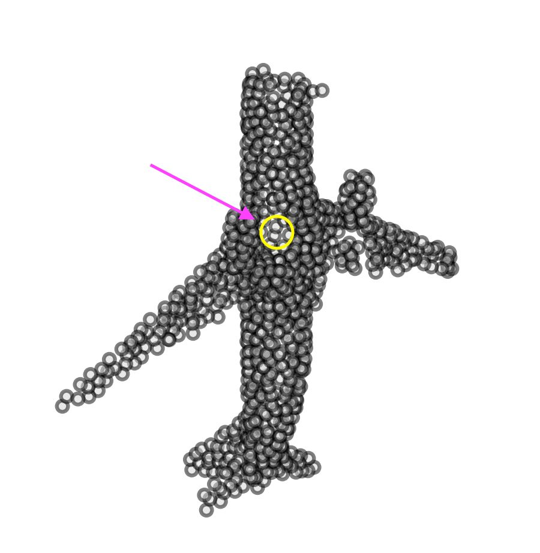
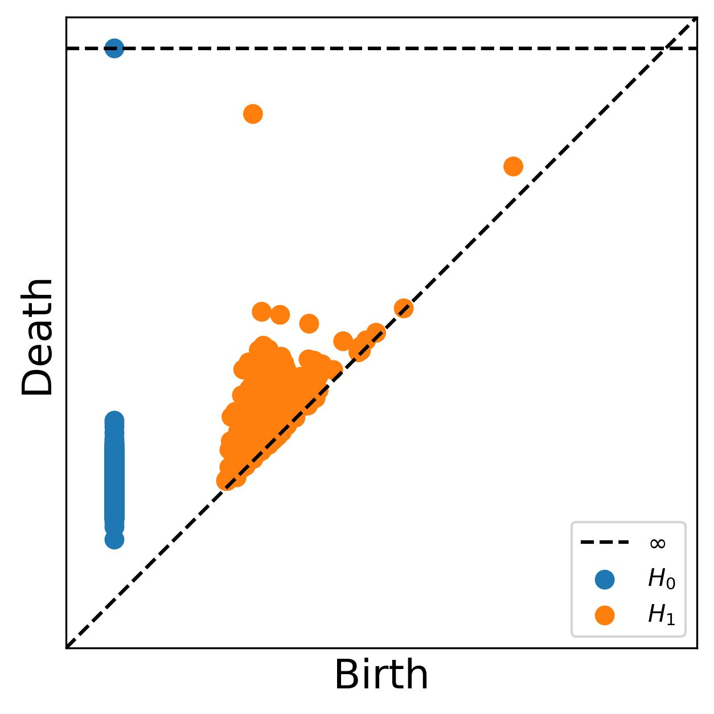
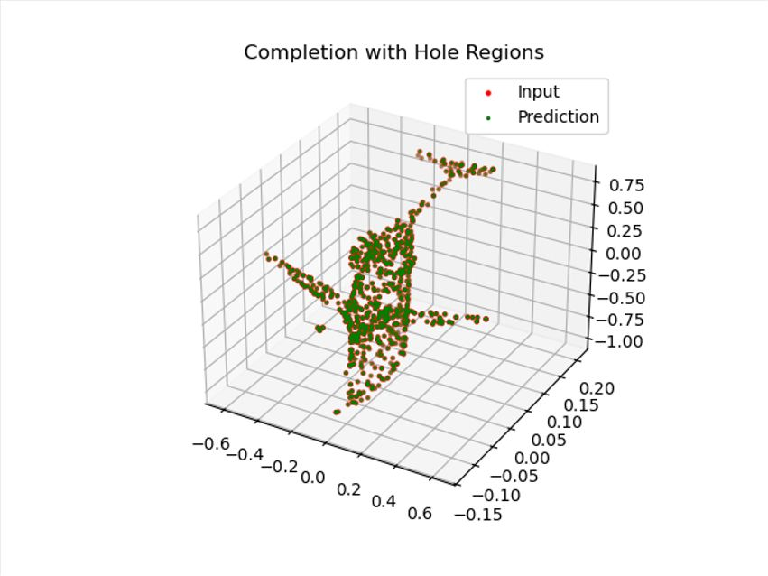

Partial point cloud
PointNet-style layers encode the incomplete geometry into a global representation.
points → geometric codeTOPO-PCN / 3D DEEP LEARNING
Complete the shape.
Keep the hole.
A point cloud can look right and still lose its structure. We explore how persistent homology helps a completion network pay attention to what should stay empty.
DRAG TO ROTATE · SCROLL TO ZOOM · ARROW KEYS
Actual paired data from the repository. This viewer shows benchmark inputs and targets; model output is shown below.
Interactive data could not load. The original project figures remain available below.
01 / WHY TOPOLOGY
Geometric closeness alone does not tell the whole story. Controlled holes make structural errors visible, creating a testbed for completion models that need to preserve more than the surface.


02 / THE APPROACH
Topo-PCN adds a small learned topology branch to a PCN-style network. The decoder receives geometric features together with a descriptor of the input’s persistent structure.
PointNet-style layers encode the incomplete geometry into a global representation.
points → geometric codeA three-value persistent-homology descriptor passes through a learned projection.
3 values → 32 featuresConcatenate both representations, then reconstruct a coarse-to-fine point cloud.
joint code → completed pointsThe presentation explores per-point topology channels and a combined Chamfer + H1 bottleneck objective. The current released code instead fuses a learned three-value descriptor with the geometric latent code and trains with differentiable coarse/fine Chamfer losses. GUDHI H1 bottleneck distance runs outside PyTorch autograd and is an evaluation/monitoring metric. These implementation details should be distinguished from the original proposed objective.
Inspect the implementation ↗03 / REPORTED RESULTS
In the presentation’s airplane experiment, Topo-PCN reduces hole-region error relative to the PCN-style baseline, with a small increase in global Chamfer distance.
lower Hole CD
| Model | Validation CD ↓ | Hole CD ↓ |
|---|---|---|
| Baseline-PCN | 0.001237 | 0.3699 |
| Topo-PCN OURS | 0.001256 | 0.2962 |
| PointAttention | 0.004500 | 0.1648 |
PointAttention reports the lowest Hole CD, alongside higher global CD in this experiment. Hole CD measures local geometric error around a hole; it does not by itself certify correct topology.
View the original results table ↗The slides describe an 80/20 split, 20 training epochs, Adam, and a learning rate of 10⁻⁴. These are the original course-project results, not a new rerun of the current code. They support a comparison within this setup, rather than a general ranking of completion methods.

04 / WHAT COMES NEXT
CODE / DATA / PRESENTATION
The benchmark archive, three completion pipelines, and original presentation are available to explore.